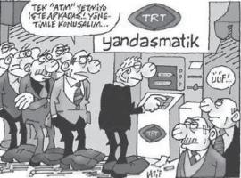

Birbirimizi kandırmaya gerek yok. Basın, AKP dönemi boyunca bazı haberlere göz göre göre boykot uyguladı. Gazetecilikte yerini korumak "neyin haber yapılmayacağını" bilmek olarak görüldü. Başbakan Erdoğan'ın ailesine yönelik hassasiyeti bilindiğinden bu konu deşilmedi: Turgut Özal'ın çocukları Efe, Zeynep ve Ahmet hakkında yapılan haberlerin binde biri bile Erdoğan'ın çocuklarını kapsamadı.
Aynı şekilde AKP döneminde yolsuzluk iddiaları da yapılabilir haberlerin dışındaydı. Doğan Grubu'yla hükümetin arasının bozulmasının altında Deniz Feneri yolsuzluğunun üzerine gidilmesi yatıyordu. Benzer yolsuzluk haberlerinden sonra muhabirler, yazarlar işinden oldu.
Dosya açıklamak, yolsuzluk belgesi yayımlamak pek mümkün olmadı kısacası.
Türkiye Radyo Televizyon Kurumu ise göz önündeydi. Bir kere hepimizin vergileriyle finanse ediliyor. Ortada gizli saklı bir durum yoktu; TRT'de olanlar nasıl ekranda gözümüzün önündeyse koridorlarda yaşananlar da aynı şekilde belirgindi.
Dahası, vergi mükelleflerinin paralarının nereye gittiğine dair hesap sorma hakları varsa TRT'nin sorgulanması da hayli meşruydu.
Ancak TRT bu iktidarın yumuşak karnı oldu.
TRT haberlerinin bile yapılmasından, TRT'nin sorgulanmasından rahatsızlık duyuldu. Çok az sayıda gazeteci TRT hakkında yazabildi. Ve bu kurumda olan biteni azıcık deşenlere toplu saldırılar, linç girişimleri yapıldı.
Bu linçten nasibini alanlardan biri Tufan Türenç oldu. Türenç, Hürriyet'teki köşesinde TRT'ye dokundu:[123]
TRT bir devlet kurumudur. Yıllık bütçesi 1 trilyon TL'den fazladır.
Bu paranın yaklaşık yüzde 80'i, denetim pulu (bandrol) ile elektrik faturalarından gelmektedir.
Yani halktan toplanan paradır.
Bu para gerektiği gibi kullanılmakta mıdır?
Zaman zaman medyaya yansıyan haberlere bakarsanız buna olumlu yanıt vermek çok zordur.
Bunun en somut örneği de TRT'deki kadrolaşmadır.
Bunun dışında iktidara yakın kişilerin TRT'de göreve getirilmeleri, yandaş köşe yazarlarına program yaptırılmasıdır.
Bu köşe yazarlarına çok yüksek ücretler ödendiği ileri sürülmektedir.
Bir önemli iddia da Genel Müdür İbrahim Şahin'in akraba ve yakınlarının TRT'de göreve getirilmeleridir.
Bunlar isim isim bellidir.
Bu kadrolaşma ile yüzlerce kişi TRT'de istihdam edilmiştir.
Ama bundan daha önemlisi TRT'nin yaptığı haberciliktir.
Esas felaket buradadır.
TRT bugün iktidarın sesi haline gelmiştir.
Hem de bütün kanallarıyla.
Halkın parasıyla yaşayan, tarafsız olması gereken bir yayın kurumunun iktidar yanlısı yayın yapması demokrasilerde kabul edilebilir bir durum değildir.
İbrahim Şahin genel müdür olarak göreve başladıktan sonra bu kadrolaşma işini hızla sürdürmüştür.
TRT'nin haber kadroları tamamen değiştirilmiş, buralarda yıllardan beri görev yapan deneyimli tüm elemanlar geri plana çekilmiştir.
Onların yerlerine yeni elemanlar alınmış ve haber kadroları tamamen değiştirilmiştir.
Bugün TRT haber kadrolarının tamamı Zaman Gazetesi, Samanyolu TV, Kanal 7, Kanal 24, Cihan Haber Ajansı ve Aksiyon Dergisi gibi yerlerden alınan elemanlardan oluşmaktadır.
Yukarda adı gecen medya kuruluşlarının tümü de yandaştır.
Yani iktidar yanlısıdır.
Bu durumda TRT haberlerinin tarafsız olmaması doğaldır.
Bir örnek verelim.
Referandum sürecinde TRT o kadar açık bir şekilde iktidar yanlısı yayın yaptı ki, Yüksek Seçim Kurulu bu kurumu uyarmak zorunda kaldı.
Ayrıca Ankara Cumhuriyet Basın Savcılığı da genel müdür ve 5 yönetici hakkında taraflı yayın yaptıkları iddiasıyla soruşturma başlattı.
Özetle TRT tarihinin en taraflı yayınlarını yapan bir kurum haline getirildi.
Zaten iktidarın da istediği bu değil miydi?
Yazının yayımlandığı gün TRT'den çok çirkin, herhangi bir devlet kurumuna yakışmayacak kadar gayrı ciddi ve kişisel hesaplaşma üslubu taşıyan bir açıklama geldi.
İfadelere bakar mısınız:
"İdeolojinin deli gömleğini giyip, Cumhuriyetimizin en köklü kurumlarından birini karalamak ve bilgisizce yazılar yazmak ancak Tufan Türenç'e yakışır!"
"Tufan Türenç, bu sorulara yanıt veremezse kendisini kamuoyu önünde 'güvenilmez, yalan yazan' biri ilan ediyoruz."
"... Ancak Tufan Türenç isimli yazar kendi eşini hangi kurumlara, hangi partilere refere ettiğini çok iyi biliyor."
Ayıp ama şaşırtıcı değil. Yeni medya düzeninde TRT gibi bir kurumun benimsediği üslup dönemi ruhuyla ilgili pek çok şeyi içinde barındırıyor. Öfke, intikam, eleştiriye tahammülsüzlük, iktidar sarhoşluğu... Ne ararsanız var.
TRT'nin açıklamasında bir de şu ifade dikkatimi çekti: "Tufan Türenç iktidara yakın kişilerin TRT'de program yaptığını iddia ediyor. İsim isim bu kişileri açıklamak zorunda.(...) Kimler iktidara yakın?"
Bu soru kendi kendine yanıtlandı.
Çünkü Türenç'e TRT'nin verdiği bu çirkin yanıt yetmedi, ayrıca TRT'de program yapan hükümet yandaşı gazeteciler de teker teker ortak üslupla saldırıya geçtiler. Hakaretler birbirini kovaladı.
Ekmek kapıları belki bu eleştiriler çoğaldıkça kapanır diye korkuyorlardı belli ki. Bunun öfkesiyle TRT'yi öyle bir savunmaya başladılar ki... Sanırsınız ki "ilkesel" bir eleştiri getiriyorlar. Hayır, hepsinin derdi kurumla şahsi para ilişkileri olmasından dolayı... Normal zamanlarda TRT'yi izlemeyen, TRT'yle hiç ilgilenmeyen köşe yazarları birden TRT'nin en büyük savunucuları oldu...
Ah, para, sen nelere kadirsin!
Latif Demirci'nin bir karikatürü aslında olan biteni özetliyor.

Karikatürde, bir ATM'nin önüne dizilen TRT'ciler oradan maaşlarını çekiyor. Bu kadar değil tabii... O ATM'nin üstünde "Yandaşmatik" yazıyor! Yandaşlar kuyruğa dizilmiş, yandaş olmanın ödülünü TRT'nin ATM'sinden çekmeyi bekliyor.
TRT'nin bugün düştüğü durum budur. Kurum tam anlamıyla "Yandaşmatik" oldu.
Tabii sesler yükselmeye, vergi ödeyenlerin parasının hesabı TRT'den sorulmaya başladığında da yandaşmatikleri bir telaş aldı ki sormayın...
Adeta TRT'den kaçan kaçana.
Hepimiz biliyoruz ki TRT'ye program yapan gazeteciler oralara rating'leri olduğu, ya da televizyondaki büyük başarıları yüzünden getirilmediler. "Yandaşmatik" TRT'ye biat ettikleri için onları ödüllendirdi.
TRT hiçbir zaman bu dönemde olduğu kadar birilerinin "babasının malı" ya da "çiftliği" gibi kullanılmamıştı. TRT tarihinde hiçbir zaman bu kadar kadrolaşma olmamıştı...
Ve neyin altını kazısanız altından bir skandal çıkıyor: "Işıkçı" olmak için düşük puanla alınan muhabirleri mi istersiniz, İbrahim Şahin'in türlü "Bizans" oyunlarını mı...
Sadece kadrolaşma bile TRT'nin nasıl bir yapıya dönüştüğünü kanıtlıyor.
Deniyor ki TRT'de her zaman iktidarın yandaşları kadrolaştı... Oysa hiçbir zaman böylesi bir tek taraflı kadrolaşma olmadı. Hangi iktidar döneminde söz gelimi sadece Cumhuriyet'ten ya da Doğan Grubu'ndan gazeteciler transfer edilerek kadro oluşturuldu? Bugüne kadar TRT'nin hep kendi yetiştiği elemanları, kendi programcıları vardı...[124]
TRT'yle ilgili tartışmalar arttıkça, birileri hesap sormaya başladıkça "yandaşmatik"ten kaçıp kendi sicillerini temizlemeye çalıştı bazı gazeteciler.
Zaman'ın yayın yönetmeni Ekrem Dumanlı ilk golü attı ve "TRT'de program ülkeme hizmettir, para istemiyorum," dedi.
Bu duruma uyanan Mehmet Barlas eskiden "üçte birini" aldığı parayı birden hiç almadığını açıkladı...
Taha Akyol da TRT'deki programını bitirdi. "Baba ve oğulun aynı kanalda program yapması doğru değilmiş," dedi.
Bahane tabii; oğlunu her yere peşinden sürükler, ondan kendi klonunu yaratmaya çalışır Taha Akyol. Şimdi mi rahatsızlık yaratmaya başladı Mustafa Akyol'un da TRT'de program yapması... Hem TRT'de Akyol'un bazı meslektaşları baba-oğul birlikte program bile sunuyor, onlar hiç gocunmuyor.
Hatta öyle ki, TRT özel kanalların "Artık ihtiyacımız yok," diye çalışmayı bıraktığı gazetecileri bile işe alıyor, onlara program yaptırıyor.
CNN Türk'teki programı kaldırılan Cengiz Çandar'ın TRT'ye neden alındığını odatv.com sorguladı:[125]
Cengiz Çandar en az TRT'deki yandaş tarifeden nemalanan diğer gazeteciler kadar izlenmeyen biri, bu yüzden TRT'yi hak ediyor!
(...)
Doğan Grubu'nun bazı yandaşların biletini de kestiğini görebiliyoruz.
Mesela... Gruptaki yazarlıkları süren Cengiz Çandar ile Hasan Cemal'in CNN TÜRK'teki programları bitirildi... Niye acaba dersiniz? Çok basit... Olanca "yalakalıkları"na rağmen hiç izlenmedikleri için!
Yani Doğan grubunun iktidarla ilişkilerinde ihtiyaç duyduğu her şeyi yaptılar ama ona rağmen programları bitirildi... Yaptıkları işin ve gazeteciliklerinin ne kadar "değersiz" olduğunu anlayabiliyor musunuz? Doğan grubunun iktidarla daha dengeli ilişkiler geliştirebilmesi için böyle gazetecilere ve böyle programlara çok ama çok ihtiyacı var! Ama her nedense olmuyor, olmuyor, olmuyor!
(...)
Çok savundukları "serbest piyasa" ve "serbest düşünce" dünyası, berbat bir programa TV dünyasında şans tanımıyor...
Peki, şimdi ne oldu dersiniz? Hiçbir özel TV'nin yer vermediği Cengiz Çandar'a TRT sahip çıktı... TRT Haber'de program yapacak.... Tabii "yandaş medya tarife"sinden ücretlendirilecek.... Beş para eder mi fikirleri bilinmez? Ama bu fikirler, izlenmeyen TRT'de devlet kesesinden sübvansiyonla seslendirilecek...
Önceki gün, Başbakan Erdoğan "Ağca'yı yayına çıkaran" TRT'yi nasıl savunmuştu: "Artık devir değişti, özel TV, kamu TV'si ayrımı kalmadı. TRT özel TV gibi çalışıyor" diye... Özel TV'nin "çok ihtiyacı olduğu halde izlenmiyor diye şutlamak zorunda kaldığını" TRT sahipleniyor... TRT, özel TV'ler mantalitesinde çalışıyormuş! Hadi canım sen de!
Yandaş gazeteci tarifesi meselesi dikkat çekici. Hepimizin vergilerinden yandaş gazetecilere büyük paralar ödenir oldu. Sadece gazetecilere mi? Yandaş futbolcular bile TRT'den astronomik ücretler almaya başladı.
Mesela Hakan Şükür.
İlk evliliğinde Fethullah Gülen'i nikah şahidi yapan, Cemaat'e yakınlığını hiçbir zaman gizlemeyen ve hatta futbol dünyasında Cemaat'in fahri sözcüsü olan Şükür de TRT'den nemalananlar arasında yer aldı.
Futbolculuktan sonra başladığı yorumculuğu ne Erman Toroğlu ne Ahmet Çakar ne de Rıdvan Dilmen kadar ilgi çekti. Ama aldığı ücret onları bile geçti.
2008 yılında yapılan sözleşmeye göre TRT "Stadyum" ve diğer programlar için Hakan Şükür'le anlaştı.
Üst limit, sponsorluk da dahil olmak üzere 80 bin TL'den pazarlık açıldı. Sonunda ayda net (vergiler hariç) 56 bin TL'ye anlaşıldı. Bu ödeme bütün bir yılı kapsıyordu; liglerin tatilde olduğu ve ekranda futbol programı yayınlanmadığı günleri de kısacası.
12 ay boyunca her Pazartesi Hakan Şükür'ün HSBC Bank Bomonti Şubesi'ndeki hesabına 14 bin TL yatırıldı.
2008-2009 sezonu için toplam 728 bin TL.
Ve Hakan Şükür sadece Pazar geceleri İstanbul stüdyolarına gelip "Stadyum" programına katılarak bu parayı aldı.
Bir de sözleşmede Hakan Şükür TRT'nin elemanı gibi görünüyor, bir şirket aracılığıyla değil, doğrudan sözleşme imzalıyor.[126]
TRT tartışmalarında yandaş gazetecileri zor durumda bırakan belge hiç beklenmedik bir yerden çıktı. Yaptığı birkaç çıkışla oluşturduğu "dürüstlük" imajının prim yaptığını gören AKP Genel Başkan Yardımcısı Bülent Arınç, CHP'li Kemal Anadol'un verdiği bir soru önergesini yanıtladı ve yandaş gazetecilerin maaşlarını açıkladı.
"Para almıyorum," diyenlere ödeme yapıldığı, ilk 100'e hiçbir zaman girmeyen programlarda haftada bir gün gidip sadece bir saat konuşarak insanların ciddi maaşlar aldığı ortaya çıktı.
Bu belge kuşkusuz sarsıcıydı ama bir yanıyla da eksikti.
TRT'ye program yapan gazetecilerin bir kısmı bu işi kurdukları paravan yapım şirketleri üzerinden yürütüyorlar. Yani hem TRT'den para alıyorlar, hem de yapım şirketinden.
Yapım şirketi belli bir miktar karşılığında programı TRT'ye satıyor. Ve TRT'den de haftalık bir ücret alıp masraflarını karşılıyor.
Ancak bu programlar fazla maliyet gerektiren yapımlar değil. Çoğu zaman bir stüdyoda birkaç konuk ağırlamak ya da birkaç gazeteciyi sohbet ettirmek üzerine.
Böylesi basit programlar için piyasada yapım şirketlerinin aldığı söylenen paralar dudak uçuklatıyor.
Bölüm başı 30-40 bin TL'den başlayıp yükselerek arttığı söyleniyor bu miktarların...
Ne diyelim... Yiyin efendiler yiyin![127]
TRT'nin Cumhuriyet'ten intikamı
Elimde ciltli, kuşe kâğıda renkli basılmış bir katalog duruyor. "Siyahbeyaz" isimli belgesel için hazırlanmış ve basına dağıtılmış. Belli ki epey para harcanmış. Parası neden önemli: Çünkü "Siyahbeyaz" bir TRT belgeseli, bütün masraflarını bizler vergilerimizle karşılıyoruz.
Ve bu belgesel Cumhuriyet gazetesinin tarihi üzerine.
Cumhuriyetimiz kadar eski bir gazetenin hikâyesinin televizyona aktarılması, geleceğe bir belge olarak kalması elbette önemli. Ancak durup dururken neden şimdi bir Cumhuriyet gazetesi belgeseli yapılır, onu da merak etmiyor değilim. Hele hele işin içinde TRT varsa.
Kataloğun sayfalarını karıştırdıkça kafamdaki sorular yavaş aydınlanıyor.
Bu belgesel için söyleşi yapılan isimlere bakıyorum: Şu anda Cumhuriyet'te yazan sadece üç kişi var. Bedri Baykam, Ümit Zileli ve Ali Sirmen.
Önceki gün Hikmet Çetinkaya'yı aradım: "Hikmet Abi, bu belgeselden size söyleşi teklifi geldi mi?" diye sordum.
"Hayır," dedi, "Ne bana, ne Genel Yayın Yönetmeni İbrahim Yıldız'dan, ne Orhan Erinç'ten, ne de Cüneyt Arcayürek'ten böyle bir talepte bulunuldu."
İlginç değil mi?
Cumhuriyet hakkında bir belgesel ama Cumhuriyet'in omurgasına yer verilmiyor, sadece "göstermelik" üç yazarla kısa söyleşiler yapılıyor.
TRT'nin belgeselinde Cumhuriyet'i kimler anlatıyor dersiniz? Cumhuriyet'le hiç ilgisi olmamış ya da geçmişte Cumhuriyet'ten çeşitli sebeplerden uzaklaştırılıp bu gazeteye kin bilemiş kişiler.
Başta Hasan Cemal. Zaten belgeselin danışmanı da Cemal'in Cumhuriyet yıllarındaki sağ kolu Okay Gönensin.
Belgesel Cemalist Cumhuriyet'in gövde gösterisi gibi: Cengiz Çandar, Şahin Alpay, Ümit Kıvanç, Meral Tamer, Osman Ulagay.
Oral Çalışlar ve Aydın Engin gibi liberal saflara savrulanlar...
Eski bir Cumhuriyet çalışanı olan Mehmet Barlas'a, sinema eleştirmenliğini neredeyse Türkiye'ye öğreten Atilla Dorsay'a, hatta Türkiye'nin ilk Cemaat'çi Atatürkçüsü eski Cumhuriyet yazarı Toktamış Ateş'e bile şaşırmadım ama bazı konuştukları insanları hakikaten anlayamadım.
Ali Bayramoğlu, Emre Aköz, Mehmet Şevket Eygi, Taha Akyol ne alaka: Bu isimler mi anlatacak Cumhuriyet'in tarihini? Bu kişilerin adları Hasan Cemal'in Cumhuriyet'i Çok Sevmiştim kitabında bile bir kere geçmiyor...
Sırf isim listesi, aslında amacın Cumhuriyet gazetesini anlatmak değil, Cumhuriyet'i karalamak olduğunu hemen belli ediyor. Kavgalar, Cumhuriyet'teki fikir ayrılıkları da yer alabilir ama bu belgesel belli ki Hasan Cemal'in anıları gibi tek taraflı.
TRT'nin neden böyle bir işe alet olduğunu anlamaksa zor değil: Bu iktidar döneminde TRT'de dönen dolapları, kadrolaşmayı en sık haber yapan gazetelerden biri Cumhuriyet. Bu aralar TRT'nin kendisini eleştiren kişilere karşı belaltı çalıştığı, birebir savaştığı da malum.
Ne hale geldik, görün işte... Bizim vergilerimizle dönen bir kurum, böylesi "şahsi" meselesine bizim vergilerimizi alet edebiliyor.
Bu iş için de "her işe yarar" liberaller zaten dünden razı.
Yeter ki Hasan Cemal ve Okay Gönensin bitmek bilmeyen o ergen öfkesiyle İlhan Abi'lerinden intikam alsınlar.
Bu arada ben "liberallerden faydalanılma" yöntemini de sekiz sene öncesinden hatırlıyorum.
Bugün Cumhuriyet'i karalayan kadro, sekiz sene önce de AKP'yi yere göğe sığdıramayan, "değişimin" fikri altyapısını hazırlayanlar değil miydi?